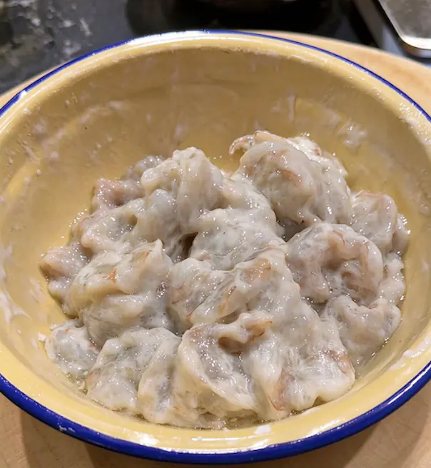
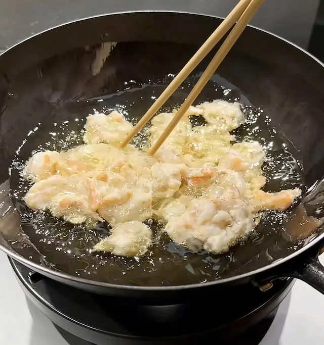
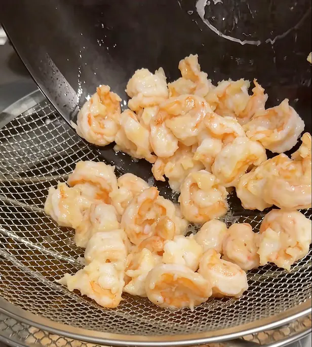
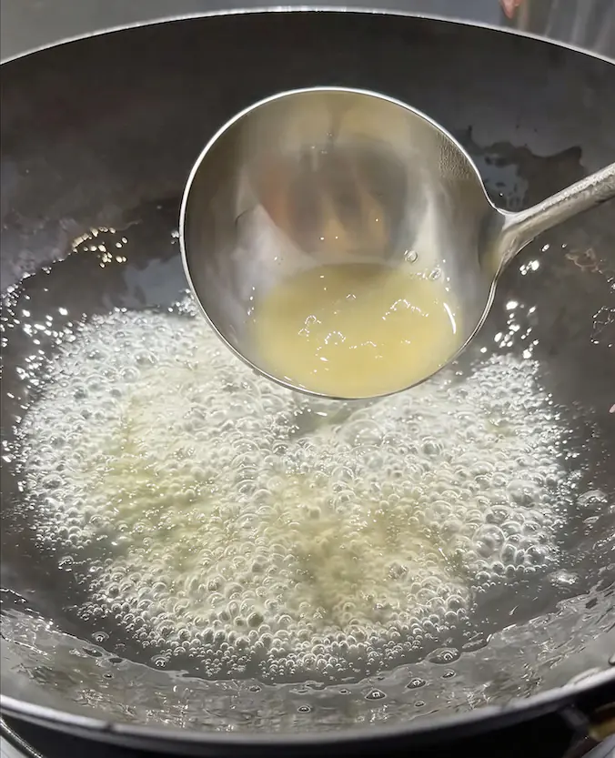
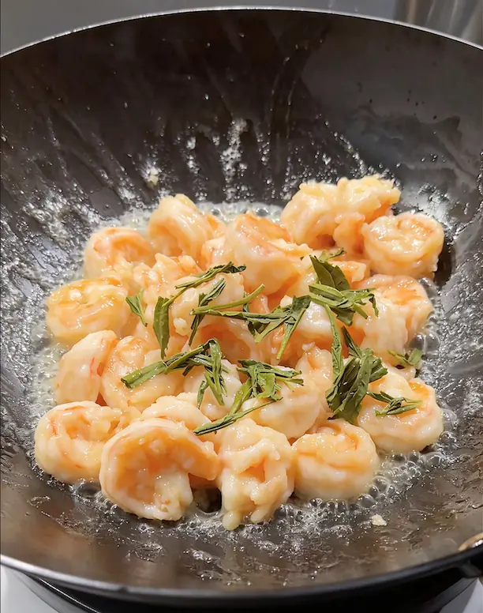

1. 准备茶汤 清香绿茶
选择绿茶这类清香的茶叶，如龙井、碧螺春；
- 可以提前一晚把茶叶用凉水泡上，放冰箱，时间充足，充分泡开茶香；
- 也可以直接用热水泡茶，快速泡好，分开茶叶、茶汤，泡久了会苦涩。
2. 腌制虾
- 虾去壳开背，取出虾线，清洗完虾后，注意擦干虾身上多余的水分，不然腌制虾入不了味；
- 加入少量盐、糖，适量茶汤，抓拌均匀；盐可以让蛋白质凝固，虾仁紧实、富有弹性；
- 多抓一会，等带虾表面粘粘起胶后，加入一个鸡蛋蛋清，更好的锁水和让虾仁更滑；
- 加入多点玉米淀粉，进一步锁水，后面要油炸虾仁；
- 淀粉抓好后，再放点玉米油，防止虾仁互相粘连，要用没什么味道的油，才不会抢茶叶香味。
3. 准备水淀粉
4. 烹饪 也是用玉米油
- 起锅烧油，大火热锅冷油，油加多点，虾仁跟着直接下锅，用筷子划开虾仁1分钟就可以出锅；注意是冷油直接炸虾仁，否则油太热了，虾仁就不容易划开了；
- 重新起锅，倒入茶汤，加入适量盐、糖，烧开茶汤，放入少量水淀粉勾芡，变稠就行了；
- 虾仁下锅，翻炒几下，再来点泡好的茶叶点缀，再翻炒几下，出锅。




